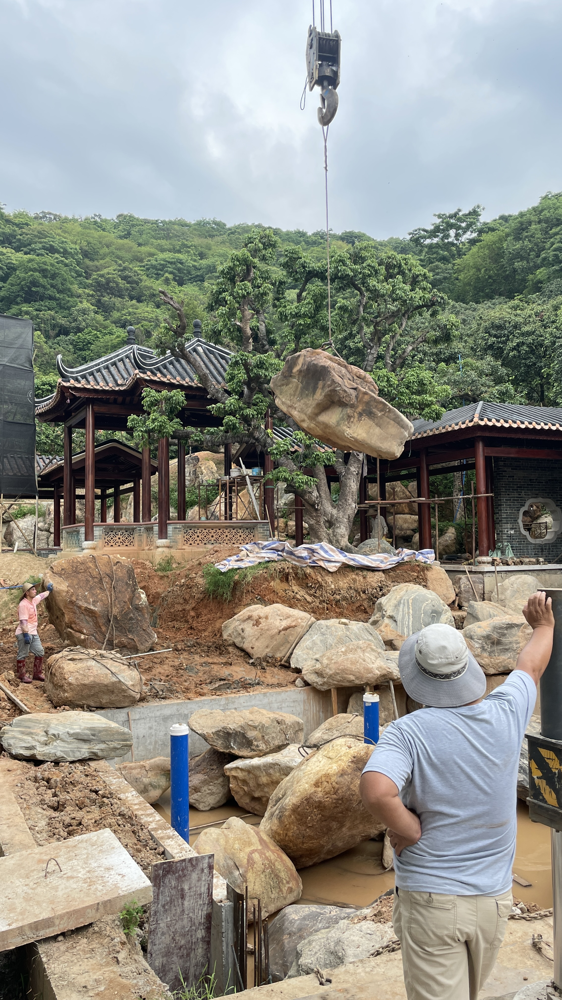
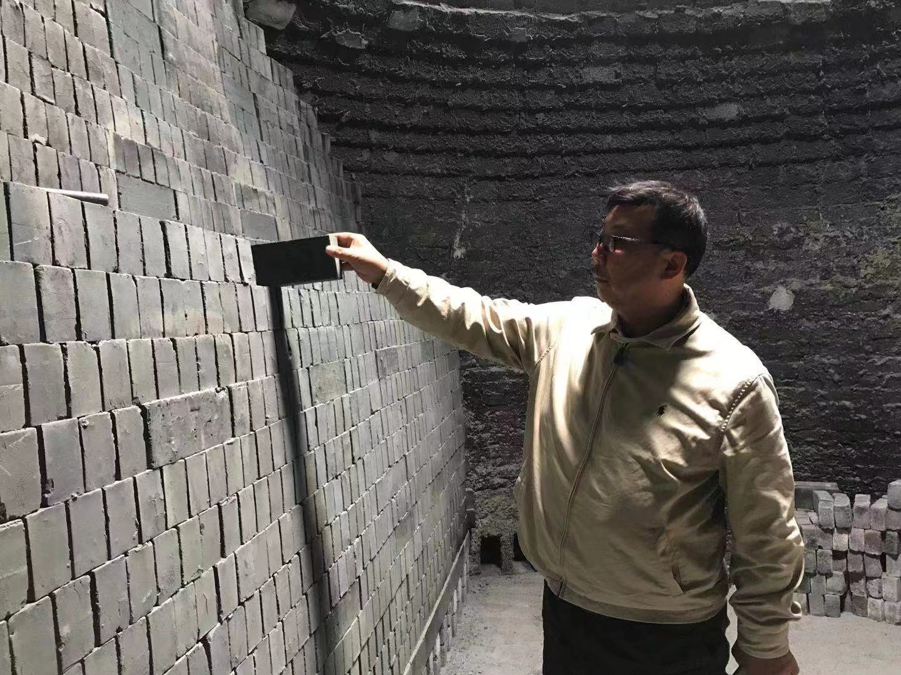
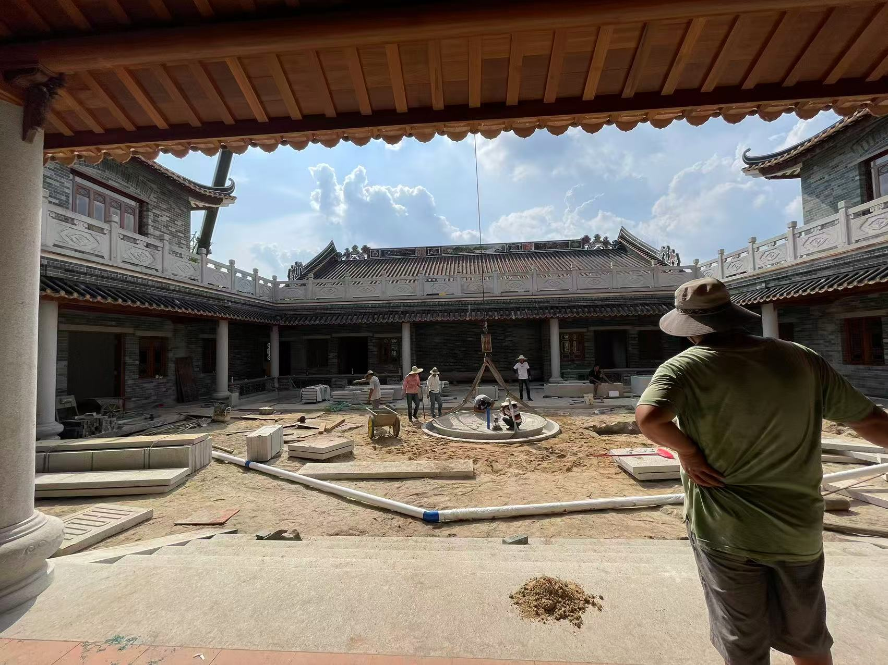
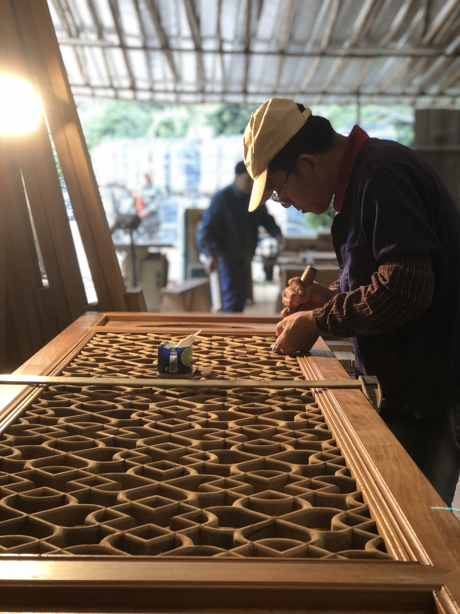
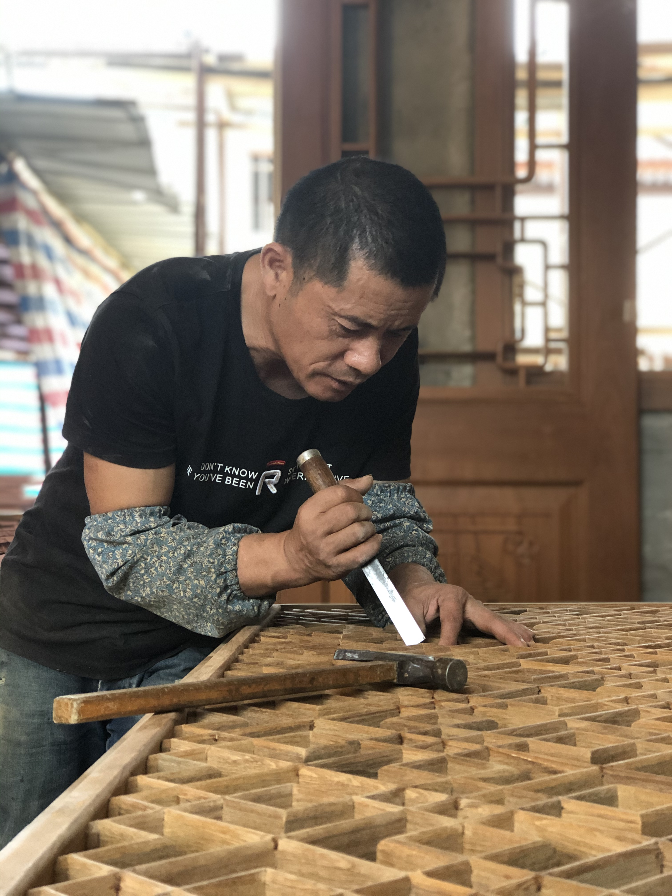
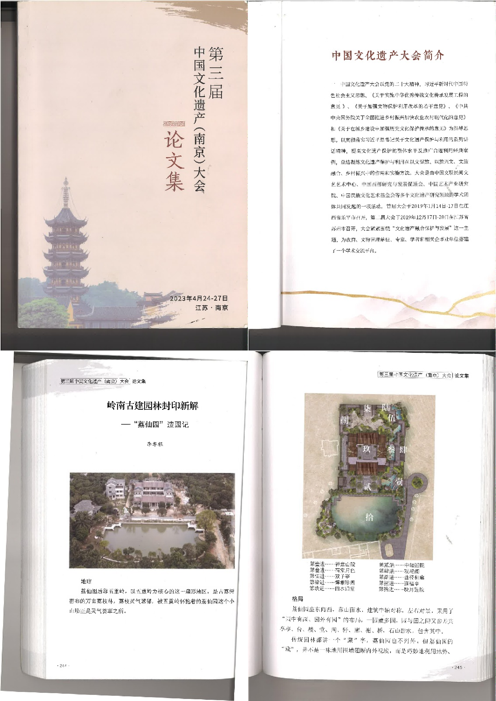

引言
一座园子，不是建成的，是长成的。
从第一铲土落下，到枝叶交叠成荫，时间在这里缓慢地做着它自己的事。
石头住下来，苔藓爬上来，树木学会了风的语言。
它至今仍在生长——每一个春天都带来新的故事。

植树
荔园内种有古荔树、乌榄树、凤凰木。
看似简单的树种，其实是画龙点睛、立意高深呐。
这是个有使命、有灵魂的园林！


1 / 3
置石
水系上无数颇有名堂的巨型灵石、仙石、奇石分布其上。
从选料到巨石安装，充分体现了置石艺术的最高水平。



1 / 3
砖瓦砌筑
砖木石为骨，此墙暗藏"袖里乾坤"。
它摒弃了"先砌墙、后贴砖"的现代取巧之法。
每一块精细鎅磨的青砖，都实打实地砌成了里外双层的空心实砌墙。



1 / 4
石材制装
墙外柱廊、墙体立柱和门窗外框，基本上都用完整的石材。
这些石材在材质和色泽的统一、表面打凿的细密、拼合的结构感，都十分到位。



1 / 5
木作工艺
传统榫卯造就这扇柚木满州窗，大大小小的彩色琉璃嵌于原色窗格之间。
古朴雅致，文士风流，望之便生怀旧之情。




1 / 5
三雕两塑
这里四处可见的"三雕两塑"（即砖雕、木雕、石雕、灰塑、陶塑）。
品相都是超凡脱俗，均出自传承千年的名家手笔。
"荔仙园"乃玲珑秘境也。


1 / 3

该作品收录于中国文化遗产大会论文集中
了解这些理念背后的造园者
关于我们